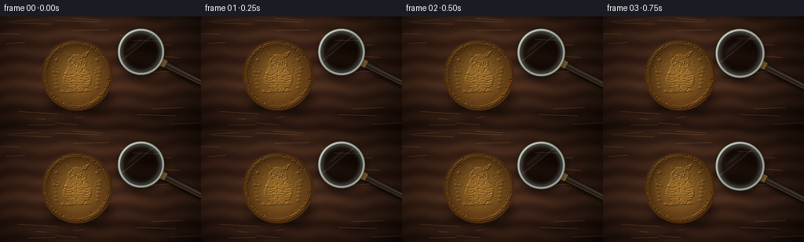
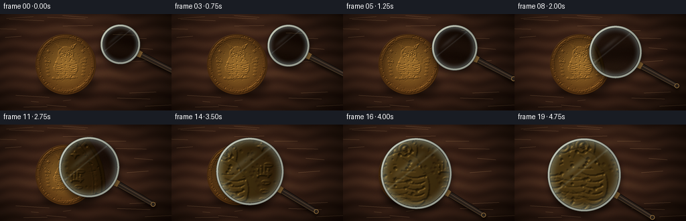
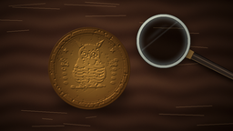
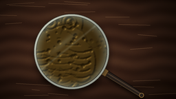
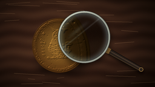

CODING AGENTS AS PIXEL WORLD MODELS
traex/DeepSeek-V4.1-Flash · phygen_069
点击播放 · 原生 RGB 像素
逐轮保存的候选
回放视频、检查图与代码变化。
每份候选均可单独播放。实际图片检查记录在下方工具轨迹中。
候选 01播放与检查图
点击播放 · 原生 RGB 像素


展开代码变化
--- 上一保存版本
+++ 本次保存版本
@@ -0,0 +1,445 @@
+from pathlib import Path
+
+import numpy as np
+from PIL import Image, ImageDraw, ImageFilter
+
+from artifact_io import save
+
+
+W, H = 256, 144
+SCALE = 4
+HW, HH = W * SCALE, H * SCALE
+CASE_DIR = Path(__file__).resolve().parent
+
+
+def smoothstep(t):
+ t = np.clip(t, 0.0, 1.0)
+ return t * t * (3.0 - 2.0 * t)
+
+
+def draw_owl_coin():
+ """Build a raised coin relief as a height map, then light it as embossed metal."""
+ yy, xx = np.mgrid[0:HH, 0:HW]
+ cx, cy, radius = 392.0, 300.0, 181.0
+ dx, dy = xx - cx, yy - cy
+ rr = np.sqrt(dx * dx + dy * dy)
+ coin_mask = np.clip((radius + 1.0 - rr) / 1.8, 0.0, 1.0)
+
+ height_img = Image.new("L", (HW, HH), 0)
+ d = ImageDraw.Draw(height_img)
+ pcx, pcy, pr = int(cx), int(cy), int(radius)
+
+ # Field and broad raised rim.
+ d.ellipse((pcx - pr, pcy - pr, pcx + pr, pcy + pr), fill=92)
+ d.ellipse((pcx - 171, pcy - 171, pcx + 171, pcy + 171), outline=188, width=17)
+ d.ellipse((pcx - 151, pcy - 151, pcx + 151, pcy + 151), outline=138, width=4)
+ d.ellipse((pcx - 144, pcy - 144, pcx + 144, pcy + 144), outline=105, width=2)
+
+ # Bead border.
+ for i in range(72):
+ a = 2.0 * np.pi * i / 72.0
+ bx = cx + 158.0 * np.cos(a)
+ by = cy + 158.0 * np.sin(a)
+ d.ellipse((bx - 3.2, by - 3.2, bx + 3.2, by + 3.2), fill=202)
+
+ # Owl body, head, wings and ear tufts in raised relief.
+ d.ellipse((cx - 58, cy - 70, cx + 58, cy + 74), fill=177)
+ d.ellipse((cx - 46, cy - 106, cx + 46, cy - 14), fill=183)
+ d.polygon(
+ [(cx - 43, cy - 90), (cx - 65, cy - 125), (cx - 21, cy - 101)],
+ fill=184,
+ )
+ d.polygon(
+ [(cx + 43, cy - 90), (cx + 65, cy - 125), (cx + 21, cy - 101)],
+ fill=184,
+ )
+ d.ellipse((cx - 72, cy - 22, cx - 15, cy + 62), fill=188)
+ d.ellipse((cx + 15, cy - 22, cx + 72, cy + 62), fill=188)
+
+ # Eye sockets and beaks.
+ for ex in (cx - 20, cx + 20):
+ d.ellipse((ex - 16, cy - 77, ex + 16, cy - 45), fill=114)
+ d.ellipse((ex - 14, cy - 75, ex + 14, cy - 47), outline=210, width=5)
+ d.ellipse((ex - 5, cy - 66, ex + 5, cy - 56), fill=232)
+ d.polygon([(cx - 7, cy - 51), (cx + 7, cy - 51), (cx, cy - 36)], fill=213)
+
+ # Fine feather courses on the wings and chest.
+ for side in (-1, 1):
+ wing_x = cx + side * 42
+ for row in range(6):
+ wy = cy - 8 + row * 13
+ spread = 24 - row
+ d.arc(
+ (wing_x - spread, wy - 8, wing_x + spread, wy + 11),
+ 15,
+ 165,
+ fill=108,
+ width=3,
+ )
+ for row in range(5):
+ fy = cy + 4 + row * 13
+ half = 34 - row * 3
+ d.arc((cx - half, fy - 8, cx + half, fy + 9), 15, 165, fill=122, width=2)
+
+ # Feet gripping an olive branch.
+ d.line((cx - 36, cy + 64, cx - 20, cy + 82), fill=196, width=7)
+ d.line((cx + 36, cy + 64, cx + 20, cy + 82), fill=196, width=7)
+ d.line((cx - 61, cy + 86, cx + 70, cy + 78), fill=180, width=7)
+ for i in range(5):
+ lx = cx - 68 + i * 30
+ ly = cy + 83 - i * 1.4
+ d.ellipse((lx - 14, ly - 6, lx + 7, ly + 6), fill=198)
+ d.line((lx - 13, ly, lx + 7, ly - 1), fill=132, width=2)
+
+ # Small laurel sprays frame the central figure.
+ for side in (-1, 1):
+ for i in range(6):
+ lx = cx + side * (103 + i * 3)
+ ly = cy + 64 - i * 20
+ d.ellipse((lx - 10, ly - 5, lx + 10, ly + 5), fill=170)
+ d.line((lx - 9, ly, lx + 9, ly), fill=108, width=2)
+
+ # Letter-like civic marks and small stars at the sides.
+ for sx in (cx - 106, cx + 106):
+ for j in range(4):
+ ox = -13 + j * 8
+ oy = -37 + abs(j - 1.5) * 7
+ d.line((sx + ox, cy + oy, sx + ox, cy + oy + 19), fill=192, width=4)
+ d.line((sx - 15, cy - 14, sx + 16, cy - 14), fill=192, width=4)
+ for sx, sy in ((cx - 103, cy - 78), (cx + 103, cy - 78)):
+ d.polygon(
+ [
+ (sx, sy - 11),
+ (sx + 4, sy - 3),
+ (sx + 12, sy),
+ (sx + 4, sy + 3),
+ (sx, sy + 11),
+ (sx - 4, sy + 3),
+ (sx - 12, sy),
+ (sx - 4, sy - 3),
+ ],
+ fill=198,
+ )
+
+ height = np.asarray(height_img, dtype=np.float32) / 255.0
+
+ # A shallow dome, age pitting, and tiny workshop scratches.
+ radial = np.clip(1.0 - rr / radius, 0.0, 1.0)
+ height += 0.11 * radial * radial
+ rng = np.random.default_rng(19)
+ for _ in range(430):
+ px = int(rng.uniform(cx - radius + 7, cx + radius - 7))
+ py = int(rng.uniform(cy - radius + 7, cy + radius - 7))
+ if (px - cx) ** 2 + (py - cy) ** 2 < (radius - 8) ** 2:
+ size = int(rng.integers(1, 4))
+ value = int(rng.integers(36, 96))
+ ImageDraw.Draw(height_img).ellipse(
+ (px - size, py - size, px + size, py + size), fill=value
+ )
+ for _ in range(85):
+ x0 = int(rng.uniform(cx - 150, cx + 150))
+ y0 = int(rng.uniform(cy - 150, cy + 150))
+ length = int(rng.uniform(7, 35))
+ angle = rng.uniform(-0.8, 0.8)
+ x1 = int(x0 + length * np.cos(angle))
+ y1 = int(y0 + length * np.sin(angle))
+ ImageDraw.Draw(height_img).line((x0, y0, x1, y1), fill=72, width=1)
+
+ height = np.asarray(height_img, dtype=np.float32) / 255.0
+ height = np.asarray(
+ Image.fromarray(np.uint8(np.clip(height, 0, 1) * 255)).filter(
+ ImageFilter.GaussianBlur(1.15)
+ ),
+ dtype=np.float32,
+ ) / 255.0
+
+ gy, gx = np.gradient(height)
+ relief = 8.5
+ nx = -gx * relief
+ ny = -gy * relief
+ nz = np.ones_like(nx)
+ norm = np.sqrt(nx * nx + ny * ny + nz * nz)
+ nx, ny, nz = nx / norm, ny / norm, nz / norm
+ light = np.array([-0.52, -0.72, 0.65], dtype=np.float32)
+ light /= np.linalg.norm(light)
+ shade = np.clip(nx * light[0] + ny * light[1] + nz * light[2], 0.0, 1.0)
+
+ radial_norm = np.clip(rr / radius, 0.0, 1.0)
+ warm_light = np.array([207.0, 151.0, 66.0], dtype=np.float32)
+ warm_dark = np.array([83.0, 49.0, 20.0], dtype=np.float32)
+ radial_mix = np.clip(0.20 + 0.72 * radial_norm**1.5, 0.0, 1.0)
+ base = warm_light[None, None, :] * (1.0 - radial_mix[..., None])
+ base += warm_dark[None, None, :] * radial_mix[..., None]
+
+ coin = base * (0.48 + 0.68 * shade[..., None])
+ spec = np.clip((shade - 0.70) / 0.30, 0.0, 1.0) ** 4
+ coin += spec[..., None] * np.array([105.0, 83.0, 42.0], dtype=np.float32)
+
+ # Darker recesses and a warm reflected-light band on the lower rim.
+ coin *= (0.82 + 0.18 * height[..., None])
+ lower_light = np.clip((dy / radius) * 0.8 + 0.2, 0.0, 1.0)
+ coin += lower_light[..., None] * np.array([18.0, 10.0, 3.0], dtype=np.float32)
+ return np.clip(coin, 0, 255), coin_mask
+
+
+def make_background():
+ yy, xx = np.mgrid[0:HH, 0:HW]
+ rng = np.random.default_rng(7)
+
+ # Dark walnut, lit softly from the upper left.
+ fine = np.sin(yy * 0.075 + 0.95 * np.sin(xx * 0.006) + 0.7 * np.sin(xx * 0.022))
+ broad = np.sin(yy * 0.022 + 0.35 * np.sin(xx * 0.004))
+ grain = 0.5 + 0.25 * fine + 0.16 * broad
+ grain += rng.normal(0.0, 0.055, (HH, HW))
+ grain = np.clip(grain, 0.0, 1.0)
+ base = np.empty((HH, HW, 3), dtype=np.float32)
+ base[..., 0] = 49.0 + 34.0 * grain
+ base[..., 1] = 29.0 + 24.0 * grain
+ base[..., 2] = 21.0 + 16.0 * grain
+
+ light = np.exp(-(((xx - 390) / 620.0) ** 2 + ((yy - 260) / 470.0) ** 2))
+ base *= (0.55 + 0.58 * light[..., None])
+
+ # A few shallow tabletop scratches catch the light.
+ table = Image.fromarray(np.uint8(np.clip(base, 0, 255))).convert("RGBA")
+ d = ImageDraw.Draw(table, "RGBA")
+ for _ in range(20):
+ x0 = int(rng.uniform(-80, HW + 80))
+ y0 = int(rng.uniform(0, HH))
+ length = int(rng.uniform(40, 240))
+ d.line(
+ (x0, y0, x0 + length, y0 + int(rng.uniform(-13, 13))),
+ fill=(185, 139, 95, int(rng.integers(8, 22))),
+ width=1,
+ )
+ base = np.asarray(table.convert("RGB"), dtype=np.float32)
+
+ # Coin contact shadow.
+ shadow = Image.new("L", (HW, HH), 0)
+ ds = ImageDraw.Draw(shadow)
+ ds.ellipse((238, 332, 574, 510), fill=185)
+ shadow = shadow.filter(ImageFilter.GaussianBlur(25))
+ shadow_np = np.asarray(shadow, dtype=np.float32)[..., None] / 255.0
+ base *= 1.0 - 0.58 * shadow_np
+
+ coin, mask = draw_owl_coin()
+ m = mask[..., None]
+ base = base * (1.0 - m) + coin * m
+
+ # Broad vignette keeps the eye on the coin and the incoming lens.
+ vx = (xx - HW * 0.47) / (HW * 0.62)
+ vy = (yy - HH * 0.50) / (HH * 0.72)
+ vignette = np.clip(1.0 - 0.45 * (vx * vx + vy * vy), 0.42, 1.0)
+ base *= vignette[..., None]
+ return np.clip(base, 0, 255)
+
+
+def handle_geometry(cx, cy, radius, angle):
+ u = np.array([np.cos(angle), np.sin(angle)], dtype=np.float32)
+ v = np.array([-u[1], u[0]], dtype=np.float32)
+ start = np.array([cx, cy], dtype=np.float32) + u * (radius + 8)
+ end = start + u * 266.0
+ w0, w1 = 16.0, 12.5
+ return u, v, start, end, w0, w1
+
+
+def draw_handle(canvas, cx, cy, radius, angle, phase):
+ u, v, start, end, w0, w1 = handle_geometry(cx, cy, radius, angle)
+
+ # Soft cast shadow.
+ shadow = Image.new("RGBA", (HW, HH), (0, 0, 0, 0))
+ ds = ImageDraw.Draw(shadow)
+ off = np.array([14.0, 20.0])
+ pts = [
+ tuple(start - v * w0 + off),
+ tuple(start + v * w0 + off),
+ tuple(end + v * w1 + off),
+ tuple(end - v * w1 + off),
+ ]
+ ds.polygon(pts, fill=(0, 0, 0, 150))
+ shadow = shadow.filter(ImageFilter.GaussianBlur(9))
+ canvas.alpha_composite(shadow)
+
+ layer = Image.new("RGBA", (HW, HH), (0, 0, 0, 0))
+ dl = ImageDraw.Draw(layer)
+ outline = [
+ tuple(start - v * (w0 + 3)),
+ tuple(start + v * (w0 + 3)),
+ tuple(end + v * (w1 + 3)),
+ tuple(end - v * (w1 + 3)),
+ ]
+ dl.polygon(outline, fill=(16, 13, 12, 255))
+ body = [
+ tuple(start - v * w0),
+ tuple(start + v * w0),
+ tuple(end + v * w1),
+ tuple(end - v * w1),
+ ]
+ dl.polygon(body, fill=(43, 35, 29, 255))
+
+ # Long lacquer highlight and a narrow reflected edge.
+ dl.polygon(
+ [
+ tuple(start - v * 5.5 - u * 1),
+ tuple(start - v * 1.5 - u * 1),
+ tuple(end - v * 3.0),
+ tuple(end - v * 7.0),
+ ],
+ fill=(91, 74, 58, 210),
+ )
+ dl.polygon(
+ [
+ tuple(start + v * (w0 - 3)),
+ tuple(start + v * (w0 - 1)),
+ tuple(end + v * (w1 - 1)),
+ tuple(end + v * (w1 - 3)),
+ ],
+ fill=(112, 86, 53, 180),
+ )
+
+ # Brass collar where the handle joins the lens.
+ collar_a = start + u * 2
+ collar_b = start + u * 30
+ collar = [
+ tuple(collar_a - v * (w0 + 4)),
+ tuple(collar_a + v * (w0 + 4)),
+ tuple(collar_b + v * (w0 + 2)),
+ tuple(collar_b - v * (w0 + 2)),
+ ]
+ dl.polygon(collar, fill=(135, 102, 55, 255))
+ dl.line((tuple(collar_a - v * (w0 + 2)), tuple(collar_a + v * (w0 + 2))),
+ fill=(208, 167, 92, 255), width=3)
+ dl.line((tuple(collar_b - v * (w0 + 1)), tuple(collar_b + v * (w0 + 1))),
+ fill=(65, 44, 24, 255), width=3)
+
+ # End cap.
+ end_center = end + u * 2
+ dl.ellipse(
+ (
+ end_center[0] - 14,
+ end_center[1] - 14,
+ end_center[0] + 14,
+ end_center[1] + 14,
+ ),
+ fill=(42, 34, 28, 255),
+ outline=(138, 105, 58, 255),
+ width=4,
+ )
+ canvas.alpha_composite(layer)
+
+
+def draw_lens(canvas, cx, cy, radius, magnification, phase):
+ # Shadow under the entire lens.
+ shadow = Image.new("RGBA", (HW, HH), (0, 0, 0, 0))
+ ds = ImageDraw.Draw(shadow)
+ ds.ellipse(
+ (
+ cx - radius - 12,
+ cy - radius + 4,
+ cx + radius + 18,
+ cy + radius + 36,
+ ),
+ fill=(0, 0, 0, 122),
+ )
+ shadow = shadow.filter(ImageFilter.GaussianBlur(17))
+ canvas.alpha_composite(shadow)
+
+ # The glass samples the same scene with a true magnification transform.
+ source = canvas.convert("RGB")
+ ri = max(8, int(round(radius)))
+ sample_r = radius / magnification
+ box = (cx - sample_r, cy - sample_r, cx + sample_r, cy + sample_r)
+ crop = source.crop(tuple(int(round(v)) for v in box))
+ glass = crop.resize((ri * 2, ri * 2), Image.Resampling.LANCZOS)
+ glass_np = np.asarray(glass, dtype=np.float32)
+
+ yy, xx = np.mgrid[0:ri * 2, 0:ri * 2]
+ gx = (xx - ri + 0.5) / ri
+ gy = (yy - ri + 0.5) / ri
+ gr = np.sqrt(gx * gx + gy * gy)
+ glass_np *= np.array([0.95, 1.01, 1.00], dtype=np.float32)
+ glass_np = (glass_np - 127.5) * 1.035 + 130.0
+
+ # Fresnel edge, broad window reflection, and a faint moving glint.
+ fresnel = np.clip((gr - 0.72) / 0.28, 0.0, 1.0) ** 2
+ glass_np += fresnel[..., None] * np.array([52.0, 65.0, 68.0], dtype=np.float32)
+ band_pos = -0.46 + 0.12 * phase
+ band = gx * 0.63 + gy * 0.78
+ reflection = np.exp(-((band - band_pos) / 0.085) ** 2) * np.clip((0.75 - gr), 0, 1)
+ reflection += np.exp(-((band - band_pos - 0.20) / 0.030) ** 2) * 0.40
+ glass_np += reflection[..., None] * np.array([48.0, 58.0, 61.0], dtype=np.float32)
+ inner_shadow = np.clip((gr - 0.87) / 0.13, 0.0, 1.0)
+ glass_np *= (1.0 - 0.10 * inner_shadow[..., None])
+
+ glass_img = Image.fromarray(np.uint8(np.clip(glass_np, 0, 255))).convert("RGBA")
+ alpha = Image.new("L", (ri * 2, ri * 2), 0)
+ ImageDraw.Draw(alpha).ellipse((0, 0, ri * 2 - 1, ri * 2 - 1), fill=255)
+ glass_img.putalpha(alpha)
+ canvas.alpha_composite(glass_img, (int(round(cx - ri)), int(round(cy - ri))))
+
+ # Metallic rim, rendered as a beveled annulus.
+ pad = int(np.ceil(radius + 22))
+ x0, y0 = int(cx) - pad, int(cy) - pad
+ size = pad * 2 + 1
+ yy, xx = np.mgrid[0:size, 0:size]
+ px = xx + x0 - cx
+ py = yy + y0 - cy
+ dist = np.sqrt(px * px + py * py)
+ angle = np.arctan2(py, px)
+ inner = radius
+ outer = radius + 15.0
+ annulus = (dist >= inner) & (dist <= outer)
+ bevel = np.clip((dist - inner) / max(1.0, outer - inner), 0.0, 1.0)
+ directional = 0.68 + 0.32 * np.clip(np.cos(angle + 2.35), 0.0, 1.0)
+ edge_dark = 0.64 + 0.36 * np.sin(np.pi * bevel)
+ rim_level = directional * edge_dark
+ rim_rgb = np.empty((size, size, 4), dtype=np.uint8)
+ rim_rgb[..., 0] = np.clip(78 + 112 * rim_level, 0, 255)
+ rim_rgb[..., 1] = np.clip(83 + 112 * rim_level, 0, 255)
+ rim_rgb[..., 2] = np.clip(79 + 101 * rim_level, 0, 255)
+ rim_rgb[..., 3] = np.where(annulus, 255, 0).astype(np.uint8)
+
+ # Crisp dark outer and inner boundaries give the metal weight.
+ dark_edge = ((dist >= outer - 2.1) & (dist <= outer)) | (
+ (dist >= inner) & (dist <= inner + 1.8)
+ )
+ rim_rgb[dark_edge, :3] = np.array([43, 42, 38], dtype=np.uint8)
+ rim_img = Image.fromarray(rim_rgb, "RGBA")
+ canvas.alpha_composite(rim_img, (x0, y0))
+
+
+def render_frame(index):
+ base = make_background()
+ canvas = Image.fromarray(np.uint8(np.clip(base, 0, 255))).convert("RGBA")
+
+ t = smoothstep(index / 19.0)
+ cx = 718.0 - 302.0 * t
+ cy = 180.0 + 120.0 * t
+ radius = 105.0 + 100.0 * t
+ magnification = 1.55 + 1.28 * t
+ angle = np.deg2rad(27.0 + 5.0 * t)
+ phase = index / 19.0
+
+ draw_handle(canvas, cx, cy, radius, angle, phase)
+ draw_lens(canvas, cx, cy, radius, magnification, phase)
+
+ rgb = np.asarray(canvas.convert("RGB"), dtype=np.float32)
+
+ # Gentle final grade: lift warm highlights, retain cool glass reflections.
+ lum = rgb[..., 0] * 0.2126 + rgb[..., 1] * 0.7152 + rgb[..., 2] * 0.0722
+ rgb += np.clip(lum - 145.0, 0, 110)[..., None] * np.array(
+ [0.04, 0.025, 0.0], dtype=np.float32
+ )
+ rgb = np.clip((rgb - 128.0) * 1.035 + 128.0, 0, 255)
+
+ small = Image.fromarray(np.uint8(rgb)).resize((W, H), Image.Resampling.LANCZOS)
+ return np.asarray(small, dtype=np.uint8)
+
+
+def main():
+ frames = np.stack([render_frame(i) for i in range(20)], axis=0)
+ save(frames, CASE_DIR)
+
+
+if __name__ == "__main__":
+ main()
候选 02播放与检查图
点击播放 · 原生 RGB 像素

展开代码变化
--- 上一保存版本
+++ 本次保存版本
@@ -404,7 +404,7 @@
(dist >= inner) & (dist <= inner + 1.8)
)
rim_rgb[dark_edge, :3] = np.array([43, 42, 38], dtype=np.uint8)
- rim_img = Image.fromarray(rim_rgb, "RGBA")
+ rim_img = Image.fromarray(rim_rgb)
canvas.alpha_composite(rim_img, (x0, y0))
可观测工具轨迹
实际执行的命令与返回图片。
命令 1exit 0
/bin/bash -c "find . -maxdepth 2 -type f | sort | sed -n '1,200p'"
命令 2exit 0
/bin/bash -c "pwd && rg --files -g 'prompt.txt' -g 'GENERATION_RULES.md' -g 'task_spec.json' -g '"'!node_modules'"' -g '"'!venv'"'"
命令 3exit 0
/bin/bash -c 'cat prompt.txt'
命令 4exit 0
/bin/bash -c 'cat GENERATION_RULES.md'
命令 5exit 0
/bin/bash -c 'cat task_spec.json'
命令 6exit 0
/bin/bash -c "sed -n '1,240p' artifact_io.py && printf '\\n--- player ---\\n' && sed -n '1,240p' player_template.html"
命令 7exit 0
/bin/bash -c 'python generate.py'
命令 8exit 0
/bin/bash -c "python - <<'PY'
from PIL import Image
import numpy as np
for name in ['inspection.png','transition_check.png']:
im=np.asarray(Image.open(name).convert('RGB'))
print(name, im.shape, 'mean', im.mean(axis=(0,1)).round(1), 'std', im.std().round(1))
PY"命令 9exit 0
/bin/bash -c 'python generate.py'
命令 10exit 0
/bin/bash -c "python - <<'PY'
from pathlib import Path
import json, numpy as np
from PIL import Image
p=Path('.')
spec=json.loads((p/'task_spec.json').read_text())
frames=sorted((p/'frames').glob('*.png'))
z=np.load(p/'pixels.npz')['pixels']
print('frame_count', len(frames))
print('pixels_shape', z.shape, z.dtype)
print('frame_sizes', sorted(set(Image.open(f).size for f in frames)))
print('html_bytes', (p/'index.html').stat().st_size)
print('generate_bytes', (p/'generate.py').stat().st_size)
print('first_last_mean', float(z[:, :, 0].mean()), float(z[:, :, -1].mean()))
PY"视觉工具实际返回图片 1

视觉工具实际返回图片 2

视觉工具实际返回图片 3

视觉工具实际返回图片 4

视觉工具实际返回图片 5

保存候选 2 份；完成命令 10 次；可验证图片返回 5 张。原始 API 响应与完整日志保留在本地。